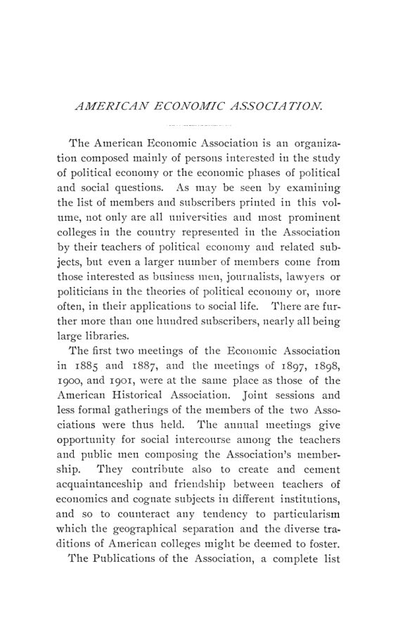

Washington, 1901: liberdade industrial, comércio e tarifa protetora
Leitura: 10 min
Washington, dezembro de 1901: Ely redefine liberdade industrial, Brooks Adams lê o comércio americano como luta pelo centro do mundo e Carver testa o que a teoria admite numa tarifa protetora.


Em Madison, Wisconsin, dezenove barbeiros queriam fechar aos domingos. O vigésimo não concordou, e os vinte continuaram abertos. Foi com essa cena que Richard T. Ely, na noite de 27 de dezembro de 1901, numa sessão conjunta com a American Historical Association na Columbian University, em Washington, ilustrou o que chamou de problema do vigésimo homem: dezenove podem preferir dez horas de trabalho e ser levados a catorze pela concorrência do vigésimo, que também preferiria dez. A escolha parece livre, disse ele, mas não é livre em nenhum sentido verdadeiro.
O discurso presidencial, “Industrial Liberty”, partia de 1776, ano da Declaração de Independência e da Riqueza das Nações, e de uma liberdade pensada em termos negativos e políticos: bastava remover restrições. Para Ely, a liberdade do século XX era outra, positiva, no sentido de Thomas Hill Green, e as restrições que pesam sobre ela vêm sobretudo da coerção de forças econômicas que se exprimem pelo contrato entre desiguais. Citou contratos de trabalho na Carolina do Sul que um juiz considerou piores que a escravidão, a lei de Massachusetts que limitou o trabalho feminino em fábricas a dez horas por dia e sessenta por semana e a lei de Utah das oito horas para mineiros, mantida pela Suprema Corte.
“Não há desigualdade maior que o tratamento igual de desiguais.” (“There is no greater inequality than the equal treatment of unequals.”)
A frase, que Ely atribuiu a um jurista moderno, resumia a tese: legislação que regula o contrato restringe a liberdade em um ponto para ampliá-la em outros. O ideal, concluiu, ficava a meio caminho entre o anarquismo e o socialismo, e ele o chamou de princípio da solidariedade social.
O comércio exterior americano era uma questão de preços ou de poder?
Na manhã seguinte, Brooks Adams, de Quincy, Massachusetts, respondeu à pergunta do programa voltando à Antiguidade. Tratou a economia como o estudo da luta pela sobrevivência entre grupos humanos e descreveu deslocamentos sucessivos do centro de energia do mundo: de Nínive, ponto de convergência das rotas do Oriente, às cidades gregas, a Roma, ao norte da Itália e a Londres. Em cada caso, disse, a mudança das rotas jogava as velhas capitais na excentricidade, e a guerra era a forma mais intensa da concorrência comercial. Na sua leitura, o ouro da Califórnia, a partir de 1848, deu aos Estados Unidos capital para as ferrovias; a crise aberta em 1873 forçou o país a vender barato; e a consolidação em trustes, que ele chamou de tipo mais alto de eficiência administrativa, fez de Londres a próxima Nínive.
O debate não aceitou a tese inteira. Charles A. Conant sustentou que a abundância de metais preciosos é consequência, não causa, da prosperidade nacional. Seligman e Henry B. Gardner lembraram que, na década de 1850, os colonos chegaram ao vale do Mississippi e as ferrovias começaram a pesar na economia; Gardner acrescentou a mudança da política comercial inglesa no fim dos anos 1840 e o salto das exportações de algodão. H. P. Willis questionou o uso do saldo comercial como argumento.
Por que a Europa voltava à proteção?
Worthington C. Ford, chefe do departamento de estatística da Boston Public Library, escolheu um fio condutor: o tratado comercial anglo-francês de 1860, negociado por Cobden e Chevalier, com a cláusula de nação mais favorecida e tarifas fixadas por prazo. A guerra de 1870 e a indenização cobrada da França levaram Thiers a buscar receita na alfândega. Na Alemanha, a tarifa de 1879 juntou os votos de agrários e industriais, aliança que, para Ford, explica boa parte da história comercial alemã desde então; em 1885 os direitos sobre trigo e centeio subiram de 1 para 3 marcos. Depois vieram a tarifa francesa de 1891 e os tratados de Caprivi.
“A tarifa não deve ser um instrumento de ataque, de guerra comercial” (“The tariff should not be an implement of offence, of commercial war”)
Ford considerava impossível uma união aduaneira europeia contra os Estados Unidos, por excesso de interesses concorrentes, e via o país entre os principais responsáveis pelo retorno a uma política restritiva. Henry C. Emery, de Yale, observou que os dois trabalhos da manhã representavam pontos de vista opostos: um próximo do renascimento das ideias mercantilistas, outro do livre-comércio.
O que a teoria permite dizer a favor de uma tarifa?
À tarde, Thomas N. Carver, de Harvard, defendeu reabrir a questão tarifária à análise científica e sustentou três proposições. Uma tarifa não é necessariamente paga pelo consumidor nacional: depende da elasticidade da oferta e da demanda e, em indústria de custo decrescente, a produção interna pode crescer o bastante para não haver alta de preço. Uma tarifa pode ser desenhada para elevar salários, se proteger as indústrias em que o trabalho pesa mais que a terra e o capital. E pode atrair trabalho e capital para indústrias mais produtivas do ponto de vista da comunidade, porque produtivo para o empresário quer dizer lucrativo, o que não é o mesmo que útil para todos.
O exemplo foi uma terra cultivada com vinte trabalhadores que, com a alta da lã, vira pasto de ovelhas e dispensa dezenove: a renda do proprietário sobe, o produto total cai. Carver admitiu que, na prática, a proteção muitas vezes havia favorecido o lado oposto, o de proprietários e capitalistas, e atribuiu isso à maior capacidade de lobby dessas classes. Guy S. Callender, Maurice H. Robinson, Fabian Franklin e Gardner contestaram partes do argumento.
Quem paga pelo progresso técnico?
Charles A. Tuttle, do Wabash College, partiu de um fato: a especialização torna o trabalhador interdependente e vulnerável a cada invenção. Os benefícios do progresso vão à sociedade e, no início, ao empresário; o choque recai sobre o trabalhador deslocado. Daí propôs o direito econômico à indenização, paga em parte pela receita geral de impostos e em parte por um tributo especial sobre o empresário, e, de modo mais amplo, o direito do trabalhador ao seu posto enquanto fosse eficiente e de boa conduta. O conselho da associação remeteu a proposta ao comitê executivo.
Como era financiada uma ilha antes e depois de mudar de soberania?
Na segunda-feira, Thomas S. Adams, da University of Wisconsin e ex-funcionário do Tesouro de Porto Rico, examinou as finanças da ilha. Afirmou ter chegado à ilha disposto a encontrar o lado bom do governo espanhol e concluído, pela leitura dos estatutos, que Porto Rico fora sistematicamente explorado no plano fiscal: orçamento votado em Madri, administração concentrada no governador-geral e uma deputação provincial cujo cargo era honorário, obrigatório e sujeito a responsabilidade pessoal.
Adams resumiu a mudança em quatro pontos: carga menor, sistema mais simples, mais peso na propriedade acumulada e deslocamento dos impostos de consumo do bacalhau e da carne de porco para o rum e o tabaco. Jacob H. Hollander, tesoureiro da ilha, tirou outra lição: nenhum desenho fiscal é bom sem possibilidade de administração eficiente. Federico Degetau, comissário residente de Porto Rico, contestou a descrição do status da ilha sob a Espanha.
A economia explica a história?
A última sessão conjunta ouviu Edwin R. A. Seligman, de Columbia, preferir a expressão “interpretação econômica da história” a “materialismo histórico” e examinar cinco objeções: fatalismo, dependência de leis históricas, socialismo, desprezo pelas forças éticas e exagero. Sua conclusão foi dupla. Como filosofia universal, a doutrina já não podia ser defendida; no sentido mais estreito, de que o fator econômico teve enorme importância e de que a história deve ser considerada na economia, continuava relevante. Isaac A. Loos e Edward P. Cheyney discutiram o trabalho.
E a própria associação, como ia?
O secretário interino, Frank A. Fetter, relatou o maior crescimento da história recente da associação: ganho líquido de 176 entre sócios e assinantes em 1901, depois de 17 em 1898, 32 em 1899 e 57 em 1900. Em 1890 eram 635; o máximo até 1897 tinha sido 668. Uma campanha de convites trouxe cerca de 150 sócios. Seligman foi eleito presidente e Fetter, secretário e tesoureiro. O encontro aprovou resolução em favor de um órgão de censo permanente e incluiu visitas ao Census Office e à Library of Congress.
Na minha leitura
Na minha leitura, o volume opõe dois métodos que ainda disputam espaço. Brooks Adams trabalha por analogia histórica de longo alcance: Nínive, Roma, Londres e Nova York como casos de uma mesma lei. O desenho é sugestivo, mas uma lei extraída de poucos episódios escolhidos depois do fato pouco se deixa testar, e as objeções de Conant, Seligman e Gardner são justamente a pergunta por causas concorrentes. Carver faz o oposto: aceita o instrumental marginalista e mostra que, mudadas as hipóteses sobre elasticidades, custos e distribuição, a conclusão livre-cambista deixa de ser automática. É o embrião do que mais tarde se chamaria de argumentos de segundo melhor, e Carver já anota o limite prático: quem desenha a tarifa costuma ser quem tem mais acesso ao legislador.
Ely e Tuttle movem o debate da eficiência para as regras do contrato e para quem arca com o custo do ajuste. A proposta de Tuttle, de financiar a transição do trabalhador deslocado com recursos gerais e com um tributo sobre quem colhe o ganho imediato, antecipa em décadas a discussão sobre seguro-desemprego e compensação de perdedores do comércio e da tecnologia. O relatório fiscal de Thomas S. Adams e o comentário de Hollander completam o quadro: a composição da receita diz quem paga, mas é a capacidade de arrecadar, e não o desenho no papel, que decide se o sistema funciona.
Glossário
- cláusula de nação mais favorecida
- compromisso de estender a um parceiro qualquer vantagem tarifária concedida a outro país.
- tarifa protetora
- imposto de importação desenhado para favorecer a produção nacional, e não apenas para arrecadar.
- elasticidade
- sensibilidade da quantidade demandada ou ofertada a uma variação de preço.
- custo decrescente
- situação em que produzir mais reduz o custo por unidade.
- parceiro (cropper) e arrendatário (renter)
- no sistema descrito por Stone, o primeiro entrega trabalho e divide a safra pela metade com o dono da terra; o segundo paga aluguel fixo em dinheiro ou em algodão.
- conciliação e arbitragem
- mecanismos para resolver disputas trabalhistas por negociação entre as partes ou por decisão de terceiros, sem greve.
- imposto do selo
- tributo cobrado pela aplicação de um selo em documento ou mercadoria, usado em Porto Rico sobre bebidas, fumo e outros bens.
- interpretação econômica da história
- tese de que as mudanças na estrutura social se explicam, em última instância, por causas econômicas.
Artigos desta edição
- Industrial Liberty — Richard T. Ely; discurso presidencial (pp. 59–79). Ely contrasta a liberdade negativa e política de 1776, associada à igualdade natural e à remoção de restrições, com a liberdade positiva de T. H. Green. Argumenta que as principais restrições modernas vêm da coerção de forças econômicas expressa no contrato entre desiguais, ilustrada pelo problema do vigésimo homem e pelos barbeiros de Madison. Defende a regulação do contrato pelo poder de polícia, citando decisões de Massachusetts, Tennessee, West Virginia e a lei de Utah das oito horas. Rejeita o anarquismo e o socialismo e propõe o princípio da solidariedade social, com conservação e desenvolvimento das grandes instituições. JSTOR
- Meaning of the Recent Expansion of the Foreign Trade of the United States — Brooks Adams (Quincy, Massachusetts) (pp. 80–96). Adams define a economia como estudo da competição pela sobrevivência e interpreta a expansão comercial americana como mais um deslocamento do centro de energia do mundo, comparável à queda de Nínive diante das rotas gregas. Atribui papel central aos metais: o ouro da Califórnia teria dado ao país capital para as ferrovias, e a recusa europeia da prata em 1873 forçou a liquidação da dívida americana. A consolidação em trustes aparece como ganho de eficiência administrativa. Descreve o declínio relativo de Londres, as dificuldades da Alemanha e da Rússia e aponta a reorganização da China como questão decisiva. JSTOR
- Meaning of the Recent Expansion of the Foreign Trade of the United States: Discussion — George Roberts, Charles A. Conant, H. P. Willis, E. R. A. Seligman, Henry B. Gardner, John F. Crowell e Brooks Adams (pp. 97–117). Roberts atribui a ascensão industrial à energia e à iniciativa da população; Conant, Seligman e Gardner contestam o peso dado aos metais preciosos e apontam o vale do Mississippi, as ferrovias e a política comercial inglesa. JSTOR
- The Commercial Policy of Europe — Worthington C. Ford (Boston Public Library) (pp. 118–157). Ford reconstrói a política comercial europeia a partir do tratado Cobden-Chevalier de 1860, que difundiu a cláusula de nação mais favorecida e tarifas fixas por prazo. Mostra como a indenização francesa de 1871, a crise de 1873 e a depressão até 1879 empurraram os países para tarifas mais altas; como a tarifa alemã de 1879 uniu agrários e industriais; e como a França de 1891 e os tratados de Caprivi reorganizaram o continente. Conclui que uma união aduaneira europeia contra os Estados Unidos é impossível, critica a política restritiva americana e defende a tarifa como instrumento de receita, não de guerra comercial. JSTOR
- The Commercial Policy of Europe: Discussion — Henry C. Emery, Brooks Adams, Charles W. Mixter e Emory R. Johnson (pp. 158–166). Emery contrapõe o neomercantilismo de Adams ao livre-comércio de Ford; Adams declara concordar com Ford; Mixter e Johnson divergem sobre o peso dos canais e das ferrovias no transporte alemão. JSTOR
- Some Theoretical Possibilities of a Protective Tariff — Thomas N. Carver (Harvard University) (pp. 167–182). Carver limita a discussão a três perguntas e sustenta três proposições. A incidência da tarifa depende das elasticidades e da lei de custos: em indústria de custo decrescente e sem monopólio, o preço interno pode não subir. Uma tarifa que favoreça indústrias em que o trabalho é o fator principal pode elevar a parcela e o nível dos salários. E, como capital e trabalho buscam o lucrativo e não o socialmente produtivo, uma discriminação tarifária pode aumentar o produto total. Ilustra com a terra convertida em pasto de ovelhas e reconhece que a proteção histórica muitas vezes favoreceu proprietários e capitalistas. JSTOR
- Some Theoretical Possibilities of a Protective Tariff: Discussion — Guy S. Callender, Maurice H. Robinson, Fabian Franklin, Henry B. Gardner e Thomas N. Carver (pp. 183–198). Callender defende que, em geral, os setores mais lucrativos são os mais úteis; Franklin e Gardner apontam falhas lógicas; Carver responde e admite que sua segunda e terceira teses se encontram. JSTOR
- The Workman's Position in the Light of Economic Progress — Charles A. Tuttle (Wabash College) (pp. 199–212). Tuttle parte de Henry C. Adams sobre a defasagem entre direito positivo e direitos industriais e trata a especialização como o fato central da economia moderna, que torna o indivíduo dependente da vontade coletiva. Distingue o ganho de longo prazo da classe trabalhadora do choque sofrido pelo trabalhador concreto deslocado por invenções. Propõe reconhecer em lei o direito econômico à indenização, financiada pela tributação geral e por um tributo especial sobre o empresário, em formas como agências públicas de emprego e transporte gratuito. Estende o raciocínio a um direito quase de propriedade do trabalhador sobre seu posto enquanto for eficiente. JSTOR
- The Workman's Position in the Light of Economic Progress: Discussion — David Kinley, Samuel M. Lindsay, George Roberts, Theodore Marburg, Adna F. Weber, William W. Folwell, John R. Commons, Edward T. Devine e outros (pp. 213–234). Os debatedores aceitam em geral o princípio e discutem a execução: Weber descreve soluções privadas na introdução da máquina de compor tipos; Folwell e Commons perguntam como tributar e operar o esquema. JSTOR
- The Negro in the Yazoo-Mississippi Delta — Alfred H. Stone (Greenville, Mississippi) (pp. 235–272). Stone, plantador da região, propõe estudar a questão racial por condições locais e descreve nove condados do delta do Yazoo e do Mississippi, com 195.346 habitantes, dos quais 171.209 negros e 24.137 brancos. Apresenta os sistemas de trabalho no algodão, a parceria com divisão da safra pela metade e o arrendamento por valor fixo por acre, o crédito de fornecedores e a garantia sobre a safra, salários e produtividade do solo. Conclui com o relato de um experimento em sua própria fazenda, iniciado em 1899 com regras contábeis mais estritas, e diz que seriam necessários cinco anos para avaliar seus efeitos. JSTOR
- The Negro in the Yazoo-Mississippi Delta: Discussion — Powers (U. S. Census) e Alfred H. Stone (pp. 273–278). Powers, estatístico de agricultura do Censo, confirma os dados de valor da terra e compara o progresso material segundo a qualidade do solo; Stone responde sobre a estabilidade da população. JSTOR
- Conciliation and Arbitration in the Coal Mining Industry — Herman Justi (Illinois Coal Operators' Association) (pp. 279–304). Justi, comissário da associação de operadores de carvão de Illinois, descreve o movimento interestadual de acordos conjuntos iniciado em janeiro de 1898, após a greve de 1897, entre mineiros e operadores da Pensilvânia, Ohio, Indiana e Illinois. Escalas salariais e condições de trabalho eram fixadas em convenções interestaduais, estaduais e distritais. Atribui as dificuldades de cumprimento à variedade das minas de Illinois, à fraqueza da organização para impor os acordos e a concessões locais de operadores. Rejeita o recurso aos tribunais para fazer valer contratos com sindicatos e aposta na organização dos empregadores e na opinião pública bem informada. JSTOR
- Conciliation and Arbitration in the Coal Mining Industry: Discussion — Carroll D. Wright e E. Dana Durand (pp. 305–313). Wright endossa os comitês conjuntos voluntários de empregadores e empregados; Durand vê no caso de Illinois uma prática que tende a se espalhar para outras indústrias. JSTOR
- Porto Rican Finance Under the Spanish and American Governments — Thomas S. Adams (University of Wisconsin; ex-funcionário do Tesouro de Porto Rico) (pp. 314–341). Adams examina o governo fiscal de Porto Rico sob a Espanha e conclui, com base na legislação espanhola, que a ilha foi administrada no interesse da metrópole: orçamento votado em Madri, poderes concentrados no governador-geral e uma deputação provincial esvaziada. Descreve o novo sistema americano: imposto geral sobre a propriedade, cobrado por funcionários assalariados, impostos do selo e de consumo sobre bebidas e fumo, com o selo aplicado na nota fiscal para evitar reaproveitamento, e uma alfândega cuja receita deveria cair com o livre-comércio com os Estados Unidos. Resume a mudança como carga menor, sistema mais simples e mais peso sobre a propriedade. JSTOR
- Porto Rican Finance Under the Spanish and American Governments: Discussion — Jacob H. Hollander, Henry C. Adams, Federico Degetau e Thomas S. Adams (pp. 342–350). Hollander destaca o papel de Adams na lei do imposto sobre a propriedade e a dependência da teoria em relação à administração; Degetau contesta a descrição do status político da ilha sob a Espanha. JSTOR
- Uniform Municipal Accounts and Statistics — Comitê especial: Moses N. Baker (presidente), Henry B. Gardner, Ed. W. Bemis, E. Dana Durand e Frederick R. Clow (pp. 351–353). Relatório breve que reafirma as conclusões de 1900, registra o comitê da National Municipal League e pede aos sócios que ajudem a testar modelos de contas uniformes. JSTOR
- Uniform Municipal Accounts and Statistics: Discussion — Charles E. Curtis, Roland P. Falkner, Harvey S. Chase, Hartwell, Clinton Rogers Woodruff e Moses N. Baker (pp. 354–368). Administradores e especialistas discutem a falta de dados comparáveis e a aplicação da contabilidade uniforme em Chicago. JSTOR
- The Economic Interpretation of History — Edwin R. A. Seligman (Columbia University) (pp. 369–386). Seligman prefere “interpretação econômica” a “materialismo histórico” e examina cinco objeções: fatalismo, dependência de leis históricas, socialismo, desprezo pelas forças éticas e espirituais e exagero. Responde que vontade individual e determinação social não se excluem, que o grande homem só prevalece quando a sociedade está pronta e que a doutrina não implica socialismo. Descreve a luta entre grupos, entre classes e entre indivíduos como derivada da pressão da vida sobre os meios de subsistência. Conclui que a teoria não se sustenta como filosofia universal, mas mantém grande valor no sentido estrito de que o fator econômico pesou de modo geral na história. JSTOR
- The Economic Interpretation of History: Discussion — Isaac A. Loos e Edward P. Cheyney (pp. 387–397). Loos aceita a versão moderada, mas critica a unilateralidade da expressão; Cheyney levanta objeções de historiador ao método de buscar um fator econômico para cada série de eventos. JSTOR
- The Fourteenth Annual Meeting — Relatório da reunião (pp. 42–58). Programa de 27, 28 e 30 de dezembro de 1901, lista de presentes, relatórios do secretário interino e do tesoureiro, resoluções, eleição de Seligman e visitas ao Census Office e à Library of Congress. JSTOR
- American Economic Association — Manual da associação (pp. 5–41). Estatuto, dirigentes, conselho, lista de sócios e resumo de 965 sócios e assinantes por estado em fevereiro de 1902. JSTOR
Fontes
- American Economic Association (pp. 5–41). JSTOR · Internet Archive (PDF)
- The Fourteenth Annual Meeting (pp. 42–58). JSTOR · Internet Archive (PDF)
- Industrial Liberty (pp. 59–79). JSTOR · Internet Archive (PDF)
- Meaning of the Recent Expansion of the Foreign Trade of the United States (pp. 80–96). JSTOR · Internet Archive (PDF)
- Meaning of the Recent Expansion of the Foreign Trade of the United States: Discussion (pp. 97–117). JSTOR · Internet Archive (PDF)
- The Commercial Policy of Europe (pp. 118–157). JSTOR · Internet Archive (PDF)
- The Commercial Policy of Europe: Discussion (pp. 158–166). JSTOR · Internet Archive (PDF)
- Some Theoretical Possibilities of a Protective Tariff (pp. 167–182). JSTOR · Internet Archive (PDF)
- Some Theoretical Possibilities of a Protective Tariff: Discussion (pp. 183–198). JSTOR · Internet Archive (PDF)
- The Workman's Position in the Light of Economic Progress (pp. 199–212). JSTOR · Internet Archive (PDF)
- The Workman's Position in the Light of Economic Progress: Discussion (pp. 213–234). JSTOR · Internet Archive (PDF)
- The Negro in the Yazoo-Mississippi Delta (pp. 235–272). JSTOR · Internet Archive (PDF)
- The Negro in the Yazoo-Mississippi Delta: Discussion (pp. 273–278). JSTOR · Internet Archive (PDF)
- Conciliation and Arbitration in the Coal Mining Industry (pp. 279–304). JSTOR · Internet Archive (PDF)
- Conciliation and Arbitration in the Coal Mining Industry: Discussion (pp. 305–313). JSTOR · Internet Archive (PDF)
- Porto Rican Finance Under the Spanish and American Governments (pp. 314–341). JSTOR · Internet Archive (PDF)
- Porto Rican Finance Under the Spanish and American Governments: Discussion (pp. 342–350). JSTOR · Internet Archive (PDF)
- Uniform Municipal Accounts and Statistics (pp. 351–353). JSTOR · Internet Archive (PDF)
- Uniform Municipal Accounts and Statistics: Discussion (pp. 354–368). JSTOR · Internet Archive (PDF)
- The Economic Interpretation of History (pp. 369–386). JSTOR · Internet Archive (PDF)
- The Economic Interpretation of History: Discussion (pp. 387–397). JSTOR · Internet Archive (PDF)
- Sumário da edição no JSTOR: Publications of the American Economic Association, 3ª série, vol. 3, nº 1.
Documento em domínio público (EUA, publicado antes de 1931), via JSTOR Early Journal Content e Internet Archive. Resumo e comentário do autor deste site, sem afiliação com a American Economic Association. Encontrou um erro? Escreva: a correção é publicada no próprio texto, com data.
← Nº 60 · Clow, 1901: como as cidades americanas aprenderam a fazer orçamento Nº 62 · Tillinghast, 1902: trabalho, terra e propriedade depois da abolição →